| トップページ | 2012年5月>>
2012年4月
【最近のできごと】長谷川ニイナ
最近のできごと
最近嬉しかった事があります！
そ・れ・は…
ジャジャーン！！
かわいらしい毛深い弟ができた事！！
犬種はアメリカン・コッカー・スパニエル。
わんわん物語のレディの犬種です！
やっと念願のワンちゃんが飼えるようになりました☆
うれしい〜〜。
これからもたくさん遊んで、たくさんいろいろな事をして、
仲良くしようねー
ねっ！ジンジャー！！
次に書くのは・・・
次に書くてれび戦士は…結実！！！
結実は一見大人っぽく見えるけど、私と陶子ちゃんと
「トップモデルのふるまいごっご」とかもやってました。
あと結実は「カワゆい」って言うと、ふくれちゃいます！
そういうところもまたカワゆい
って結実ゴメン…！
かわいいだね！
あと結実は、この前台本の裏にこっそり手紙を書いてくれました！
超うれしかった〜！
そういうわけで、結実はオチャメでーす！！大好き
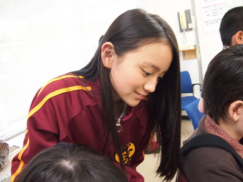
投稿者:長谷川ニイナ | 投稿時間:18時00分 | カテゴリ：We are 大天才テレビジョン | 固定リンク


 " title="ソーシャルブックマークについて">
" title="ソーシャルブックマークについて">
※NHKサイトを離れます。
【ドウブツカメラ！】犬（撮影：結実・竹原）
４月９日放送「被写体…犬」
今回の動物カメラマンは、岡田結実と竹原司。
２人が撮ったベストショットはこちら！
※画像をクリックで大きな画像が開きます。
開いた画像を右クリックで画像を保存できます。
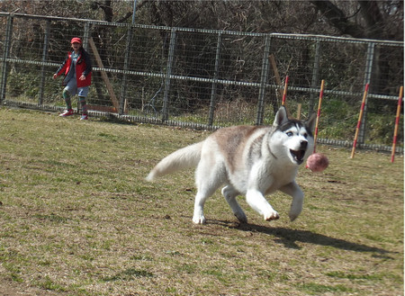
撮影：竹原司 （ゆいとはすみのコンビ）
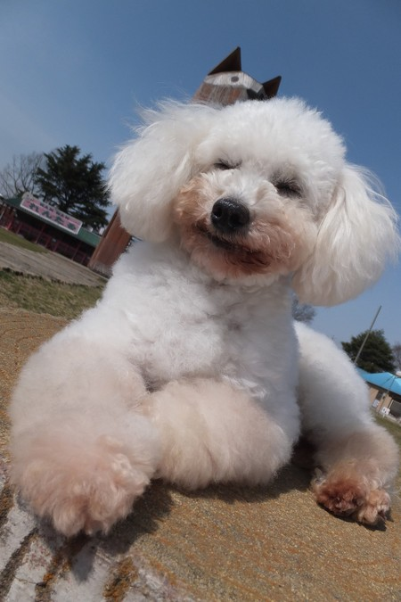
撮影：岡田結実 （マイロの休日）
ロケ中の２人のオフショットはこちら！
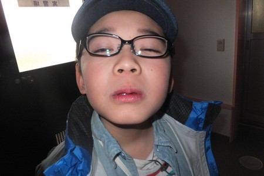
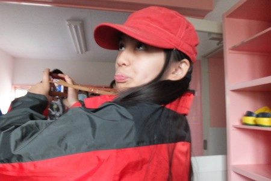
投稿者:大天才テレビジョン社員３号 | 投稿時間:00時00分 | カテゴリ：ドウブツカメラ！ | 固定リンク
" title="ソーシャルブックマークについて">
※NHKサイトを離れます。
【最近のできごと】山田陶子
最近のできごと
あかりちゃんのゲームで走るやつが
へただったのに
ついに×2 1,000mいったのです。!!!!!! (０＾0＾０)
すごいよねぇー（＾ ! ＾）y~
次に書くのは・・・
ニイナはさぁー。(●´∀｀●)/
本当いい子じゃなーい(*´∇`)
だからかわいいのよー（＞＜）
年上だけどっ。
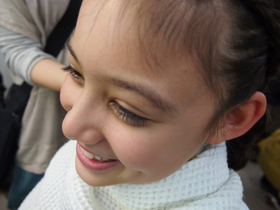
投稿者:山田陶子 | 投稿時間:18時00分 | カテゴリ：We are 大天才テレビジョン | 固定リンク
" title="ソーシャルブックマークについて">
※NHKサイトを離れます。
【最近のできごと】竹原司
最近のできごと
これは前に起きた事なんです。
お母さんにゲームを没収されて困ってたんですけど
お母さんに、たまたま水を一階に取ってきてといわれて取ってこようとしたら
棚の中にたまたまゲームがあって…
みつけちゃったんですよ！(笑)
次に書くのは・・・
次は天才とうこさんです
じゃあまた今度です(笑)
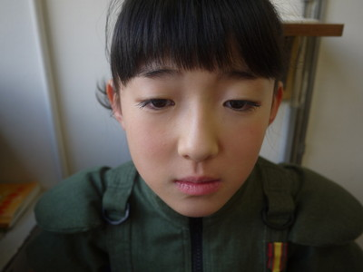
投稿者:竹原司 | 投稿時間:18時00分 | カテゴリ：We are 大天才テレビジョン | 固定リンク
" title="ソーシャルブックマークについて">
※NHKサイトを離れます。
【乗りすけFile】 No.35 ラフテレーンクレーン
乗りすけFile No.35：ラフテレーンクレーン（４月２５日放送）
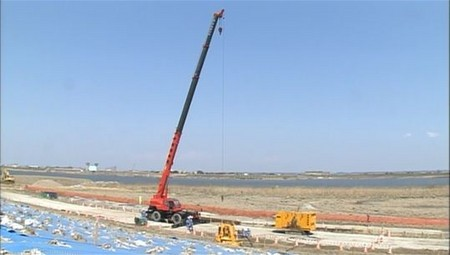
全長：11m13cm
全高：3m45cm5mm
全幅：2m62cm
重量：約26.5t
定員：1名
価格：2370万円
重い荷物を吊り上げるクレーン。ラフテレーンクレーンは荒れた地形でも走行することができる。
作業を行う際にはアウトリガーで車体をがっちり固定する。
4段式のブームを最大に伸ばすと30.5mに達する。
12t以下用と3t以下用の大小2つのフックを装備する。操縦席の天井はガラス張りになっており、上方視界が確保されている。
番組では河原の地盤を補強する鋼板を吊り上げる作業を行った。
これまでの【乗りすけFile】はこちら
投稿者:大天才テレビジョン社員１号 | 投稿時間:18時42分 | カテゴリ：乗りすけさん | 固定リンク
" title="ソーシャルブックマークについて">
※NHKサイトを離れます。
【最近のできごと】ソーズビー航洋
最近のできごと
今日は、てれび戦士にやっている、
いたずらをしょうかいします！
1、 中２男子のお水の中にお酢を入れてどっきり！
2、 耳の中に小さな冷たい空気をフ〜〜〜（笑）
3、 浅賀くんの入館証を、浅賀くんのパンツの中に入れた！
です！あれ？意外と少ない！！
でも、いつもほどほどだからご安心ください！
次に書くのは・・・
次はとってもキャワイー司くんです！
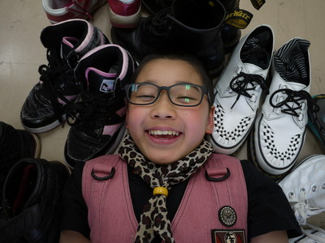
うめぼしのようなすっぱい記事かな？
ということで、航洋でした〜〜！
♪KOYO♪
投稿者:ソーズビー航洋 | 投稿時間:18時00分 | カテゴリ：We are 大天才テレビジョン | 固定リンク
" title="ソーシャルブックマークについて">
※NHKサイトを離れます。
みなさんご存じですか？
いつも大天才テレビジョンブログをご覧いただきありがとうございます。
てれび戦士の「最近のできごと」いかがですか？
本当にどうでも良いエピソードだったり、はっきり言って意味不明だったりもしますが、
彼らの偽らざる生の声であります。
さて、毎回、次にブログを書く人の写真が載っていますが、
これはてれび戦士が実際にカメラのシャッターを切っています。
なので、延命ちゃんが撮った金子の写真は
あんなに見上げてた感じになっているのです。撮る方、撮られる方の関係性がわかりますね。
そんなわけでてれび戦士が写真を撮るわけですが、失敗作も多いわけです。
本来ならパソコンのゴミ箱行きですが、きょうは特別にいくつか公開いたしましょう。
なお、過剰な期待をしてはいけませんよ。
あくまで「失敗作」なので。まずは島田。ピンぼけ。
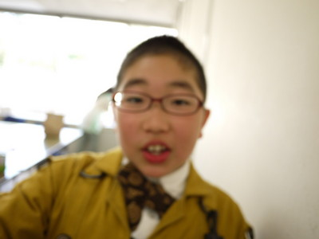
つづいて延命ちゃんピンぼけ。
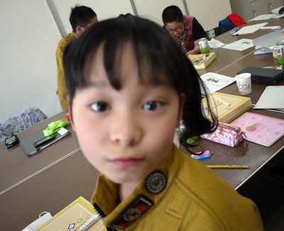
黒澤。これは上手に撮れてますね。
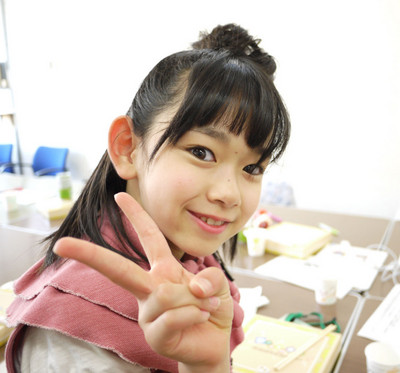
ソーズビーの変顔
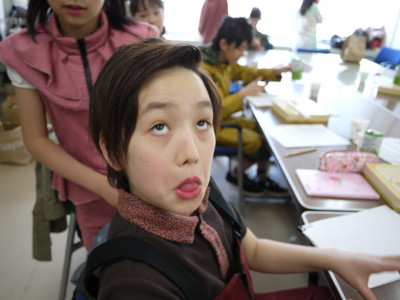
寿々歌。見切れ！顔！！
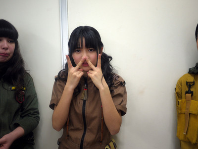
島田は何故踊ってるの？
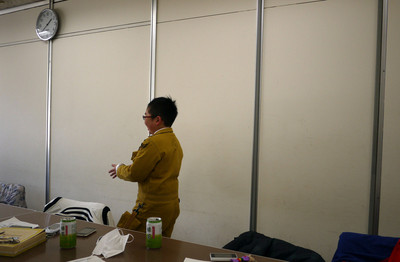
以上です。おつきあい頂きましてありがとうごいざいます。。
投稿者:大天才テレビジョン社員２号 | 投稿時間:18時19分 | カテゴリ：お知らせ！ | 固定リンク
" title="ソーシャルブックマークについて">
※NHKサイトを離れます。
【最近のできごと】鎮西寿々歌
最近のできごと
すずかでーーす♪( ´ ▽ ` )ﾉ
最近の悩み聞いてください。
てれび戦士が
うちを
たらこーーーーー！！！
といじめてきます。笑
あかりと
とうこちゃんは
赤の粘土で
たらこだーーー！
と。
うちの唇を作るのです。笑
みんな
助けてーーー！！泣
次に書くのは・・・
航洋さんーーー。
航洋さんは
とにかく！
おしゃべりさん♪笑
誰かが止めないと
永遠に喋り続けます…。笑
あと。
笑出すと止まらなーーーい！
撮影の時も笑いが止まらなくて…
もし
天てれの放送を見たとき
小さい声で笑い声が聞こえてたら
それは
幽霊じゃなく…
航洋なんです…。笑
でもホンマに可愛い
うちの弟♪
うちの弟
航洋をよろしくお願います！
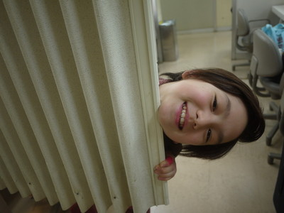
投稿者:鎮西寿々歌 | 投稿時間:18時00分 | カテゴリ：We are 大天才テレビジョン | 固定リンク
" title="ソーシャルブックマークについて">
※NHKサイトを離れます。
【最近のできごと】島田太一
最近のできごと
コロコロえんぴつが手にささっていたい！！
と思って手の方を見たら
まさかの大吉だった(＞＜)
次に書くのは・・・
次はふでばこに入ってる
文ぼーぐの数は26種類の
鎮西寿々歌ちゃんでぇぇすぅ(´∀｀＊)/
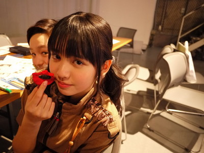
投稿者:島田太一 | 投稿時間:18時00分 | カテゴリ：We are 大天才テレビジョン | 固定リンク
" title="ソーシャルブックマークについて">
※NHKサイトを離れます。
【最近のできごと】黒澤美澪奈
最近のできごと
みれなです！！
とつぜんですが、さいきん発見があります！
小さいことなんですけど、
５００円に金銀があることです。＼(^_^)／
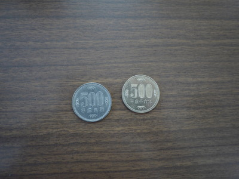
金は平成十六年で、銀は平成八年です。
わたしにとっては大発見！
みなさんも、発見するとたのしいですよ！
次に書くのは・・・
次は、おっとりけいのおにぎりタイプの
島田太一くんです。
みんなをハッピーにしてくれる人気者です。
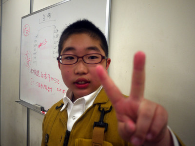
投稿者:黒澤美澪奈 | 投稿時間:18時00分 | カテゴリ：We are 大天才テレビジョン | 固定リンク
" title="ソーシャルブックマークについて">
※NHKサイトを離れます。
【最近のできごと】金子隼也
最近のできごと
先日卒業式がありました。
小学校最後のクラスは明るく元気が良いクラスでした。
担任の先生は、ダジャレばっかり言って、スポーツにはすごく厳しい先生が
なんと卒業式で号泣していました！！
リハーサルで、もううるっときていた目だったので
もしや！と思っていましたが、本当に号泣していました。
卒業式の始まる前、教室で聞いた先生の最後のお話、
僕は感動して涙が止まりませんでした。
それから通っていた幼稚園からもお手紙が届いていました。
中には幼稚園の先生からのメッセージと自分が描いた自分の絵！
もうびっくりです。
だって今描く絵とほとんど変わってないんだもん（笑）
これまでいろいろな人に支えられてきたんだなぁと改めて感じた一日でした。
次に書くのは…
初めて会った時の第一印象は
目が大きくて目ヂカラすごっ！
かわいい子だなぁと思った。
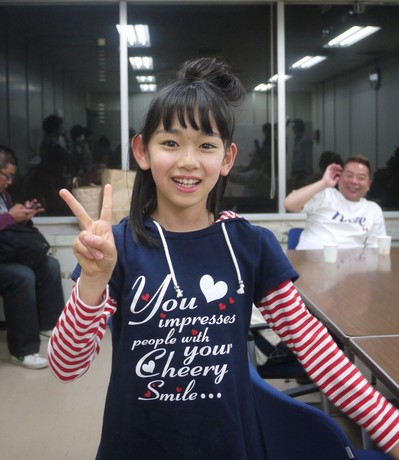
しゃべるとかわいいだけでなく、しっかりしてます！！
ワールドカップの時に長友選手と長谷部選手に会った事があるんだって。
でも、サッカー知らなくてふつうに会ったみたい。
僕にはうらやましすぎる話だ。
投稿者:金子隼也 | 投稿時間:18時00分 | カテゴリ：We are 大天才テレビジョン | 固定リンク
" title="ソーシャルブックマークについて">
※NHKサイトを離れます。
【乗りすけFile】 No.34 猪牙船
乗りすけFile No.34：猪牙船（４月１８日放送）
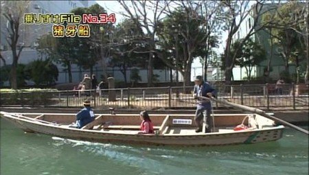
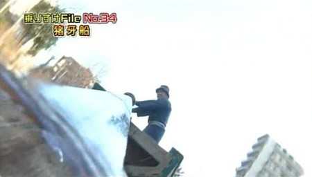
全長：7m75cm
全高：57cm
全幅：1m41cm
重量：約800kg
定員：9名
江戸の町の川や堀を縦横無尽に走り回った江戸時代の水上タクシー。
尖った舳先が猪の牙に似ていることからその名がついたと言われている。
長さ6mほどの櫓（ろ）１本で操船する。
船尾にあるヘソ状の突起に櫓の中ほどの穴を合わせてジョイントする。
船頭が水面を切るように櫓を押し引きすると、スクリュー同様に「揚力」が発生し、船を前進させることができるのだ。
番組で紹介した猪牙船は、ボランティアの同好会によって運航されている。
これまでの【乗りすけFile】はこちら
投稿者:大天才テレビジョン社員１号 | 投稿時間:18時43分 | カテゴリ：乗りすけさん | 固定リンク
" title="ソーシャルブックマークについて">
※NHKサイトを離れます。
「きりんのおもちゃ」延命杏咲実
最近のできごと
こんにちは！
わたしがさいきん、かなしかったなって思った時は、
いとこの家にきりんのおもちゃがあって、それにのれるんですよ！
だ・け・ど、それがもうすぐたいじゅうオーバーで。
はー。でも、いとこはまだのれて。
だけどいとこの方がとしうえで…。
だけど、わたしのほうがせが高いんですよ。
だからか…。
まぁ、もう一回のりたかった。
次に書くのは…
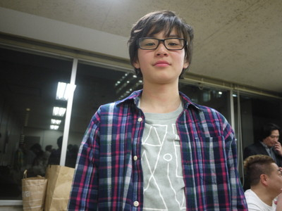
ひかえしつにあるホワイトボードに
金子くんとニイナちゃんであいあいがさを書くと、
２人がおこってしまいます。
でも、金子くんのほうがおこっています。
つぎはそんな金子くんが大天ブログを書きます。
お楽しみに！
投稿者:延命杏咲実 | 投稿時間:18時00分 | カテゴリ：We are 大天才テレビジョン | 固定リンク
" title="ソーシャルブックマークについて">
※NHKサイトを離れます。
【最近のできごと】浅賀玲音
最近のできごと
どうも！
浅賀玲音です(´∀` )
最近嬉しかったことがあって...
小っちゃい男の子に
気づかれたこと！！！(笑)
遠くからこっそり見てて、
手をふってあげたら
ニコッてして
手をふりかえして
くれました！！( ´ ▽ ` )ノ
明日からも頑張ろうっていう気持ちになれました
大きくなっても
天てれ見てて欲しいなぁ...
次に書くのは…
さて！！
次のてれび戦士は...
皆のアイドル
延命ちゃん！！(笑)
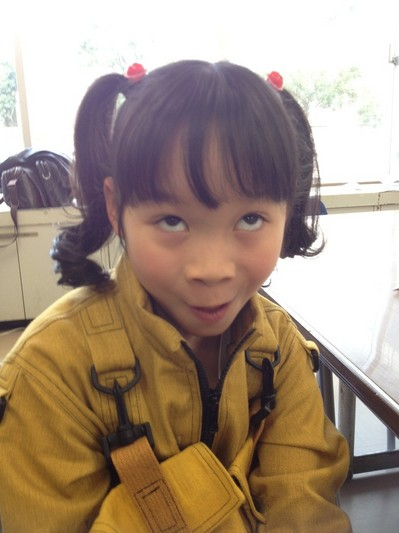
いっつも大人顔負けの
意見とか言ってて...
尊敬してます(￣^￣)ゞww
見てるだけで癒されるかな！(笑)
それでは！( ´ ▽ ` )ノ
投稿者:浅賀玲音 | 投稿時間:18時00分 | カテゴリ：We are 大天才テレビジョン | 固定リンク
" title="ソーシャルブックマークについて">
※NHKサイトを離れます。
大天はなび
ブログのオープンに伴いまして、各地よりお祝いの様子が届いています。
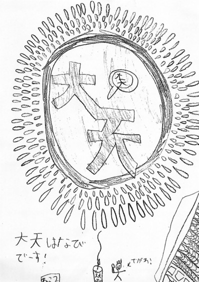
見事な打ち上げ花火です。着火したのはボスなんですね。
右側は観客でしょうか。すごい数の人ですね。
昨日（4月16日）ファックスでこれを送ってくれたあなた！名前がなかったけど、
ありがとう！！
投稿者:大天才テレビジョン社員２号 | 投稿時間:12時03分 | カテゴリ：お知らせ！ | 固定リンク
" title="ソーシャルブックマークについて">
※NHKサイトを離れます。
【最近のできごと】寺田朱里
最近のできごと
嬉しかったこと！あ…楽しかったこと！
古い友達みんなで公園のすべり台で遊んでたの！
それで、楽しくなっていっぱい遊んでたら
あっという間に半日が過ぎてた！
(_´Д｀)ほほほ♪(｀ε´)
次に書くのは…
れお
いつも自撮りしてるよ！(´∀｀＊)/
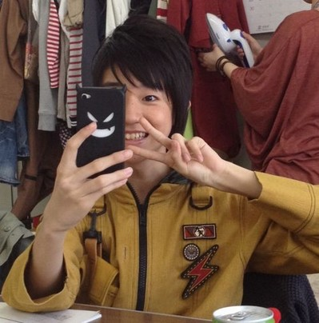
あといっつもティッシュで鼻かんでる！ブゥゥゥゥゥゥゥー！ってw
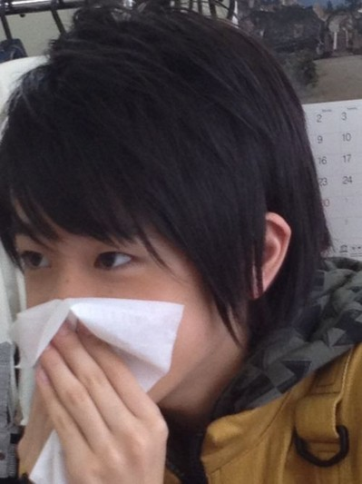
投稿者:寺田朱里 | 投稿時間:18時00分 | カテゴリ：We are 大天才テレビジョン | 固定リンク
" title="ソーシャルブックマークについて">
※NHKサイトを離れます。
大天才テレビジョン会長より、ブログ開設のご挨拶
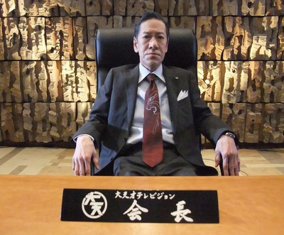
こんにちは。あるいはこんばんは。大天才テレビジョンの会長です。
日頃より大天才テレビジョンの放送事業にご理解、ご協力いただきありがとうございます。
本日より「大！天才てれびくん」の番組ブログ「大天才テレビジョンブログ」を開設いたしました。
「大！天才てれびくん」は大天才テレビジョンの看板番組です。
一時はお年寄りのてれび戦士を起用するなど迷走することもありましたが、私が大抜擢した特命プロデューサー・出川哲朗のもと、これまで以上にみなさまに愛される番組作りに努めております。会長といたしましては自信を持っておすすめできる番組です。
しかし、放送を取り巻く環境は以前とは全く異なる段階に入っています。先ごろ発表いたしました「大天才テレビジョン重点目標」に、「愛される放送局」という目標を私は盛り込みました。このブログ開設はその目標達成のための第一歩です。
みなさまに少しでも愛していただけるよう、このブログにはてれび戦士の生の声を掲載することにいたしました。また、放送の見所もわかりやすく紹介していきます。ブログというメディアの特性を活かしこれまで以上に情報発信に努めて行く所存ですので、番組ともどもご愛顧頂きますようお願い申し上げます。
みなさま、どうか愛してください。
大天才テレビジョン 会長
投稿者:斎藤洋介 | 投稿時間:17時30分 | カテゴリ：お知らせ！ | 固定リンク
" title="ソーシャルブックマークについて">
※NHKサイトを離れます。
ページの一番上へ▲